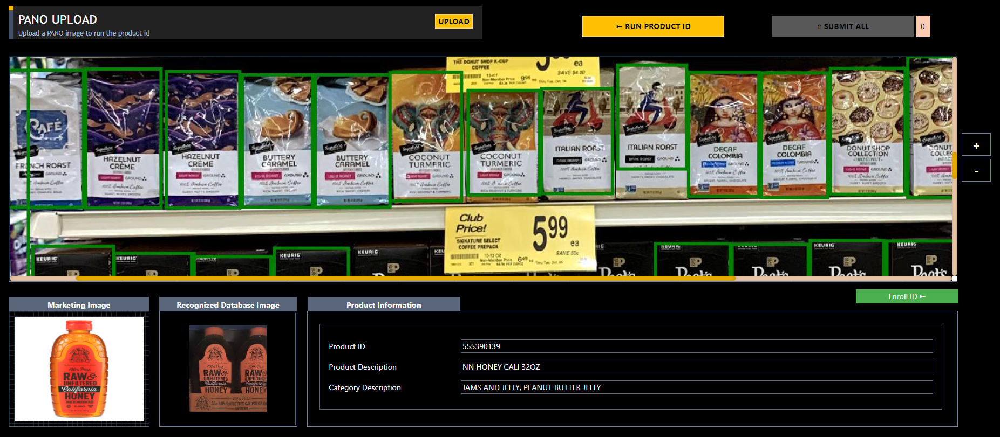

Walmart Product Detection
• Collaborated with Bossa Nova Robotics to develop the detection algorithm that identifies all Walmart items on the shelf in real-time using various state-of-the-art deep learning techniques
• Implemented the web system for simulation of the real-time product detection that enables measuring the performance of detection algorithm and show users the detailed information of each identified items